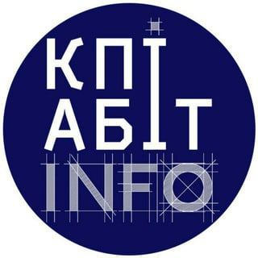
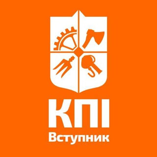

Бакалаврат:
- Паспорт (копія, але оригінал мати з собою);
- Облікова картка платника податків (копія, але оригінал мати з собою);
- Приписне свідоцтво або військовий квиток (копія, але оригінал мати з собою);
- Чотири кольорові фотографії (формат 3×4 см);
- Сертифікат доуніверситетської підготовки, якщо закінчували підготовчі курси і претендуєте на додаткові бали
(оригінал);
- Диплом МС/МБ/ФМБ, якщо Ви вступник з індивідуальною програмою підготовки (копія);
- Договір між КПІ та вступником (оригінал – 2 примірника);
- Спеціальні умови вступу на навчання (оригінал, копія).
Магістратура:
- Паспорт (копія, але оригінал мати з собою);
- Облікова картка платника податків (копія, але оригінал мати з собою);
- Приписне свідоцтво або військовий квиток (копія, але оригінал мати з собою);
- Чотири кольорові фотографії (формат 3×4 см);
- Договір між КПІ та вступником (оригінал – 2 примірника);
- Спеціальні умови вступу на навчання (оригінал, копія).
Посилання: https://pk.kpi.ua/originals/

Які документи потрібно подати для вступу?
Корисні Telegram-канали для вступників
|

Вступник КПІ
|
|
|

КПІ Вступник чат
|
|
|
Кафедра військової підготовки КПІ
|